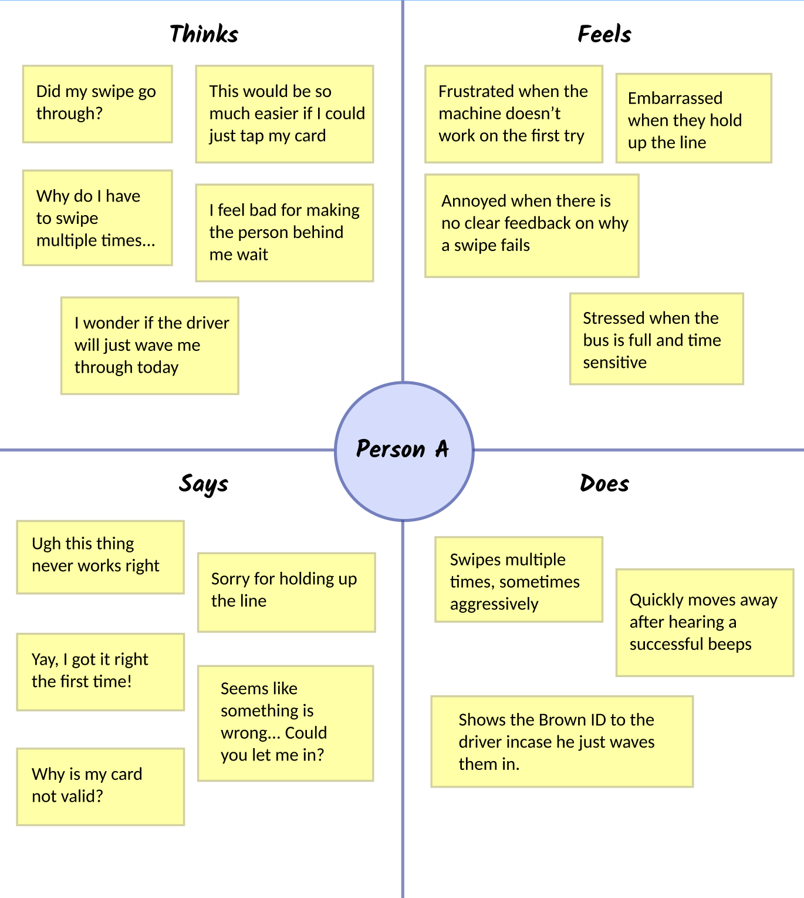
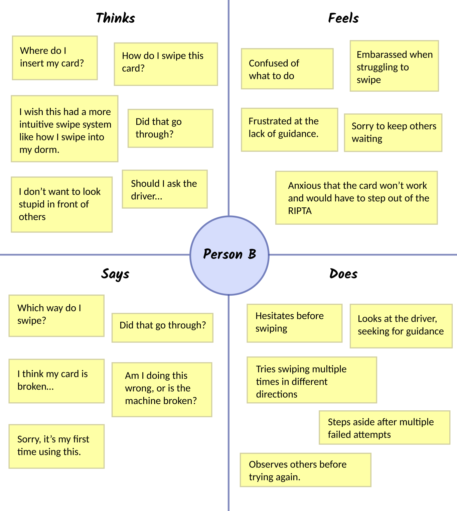
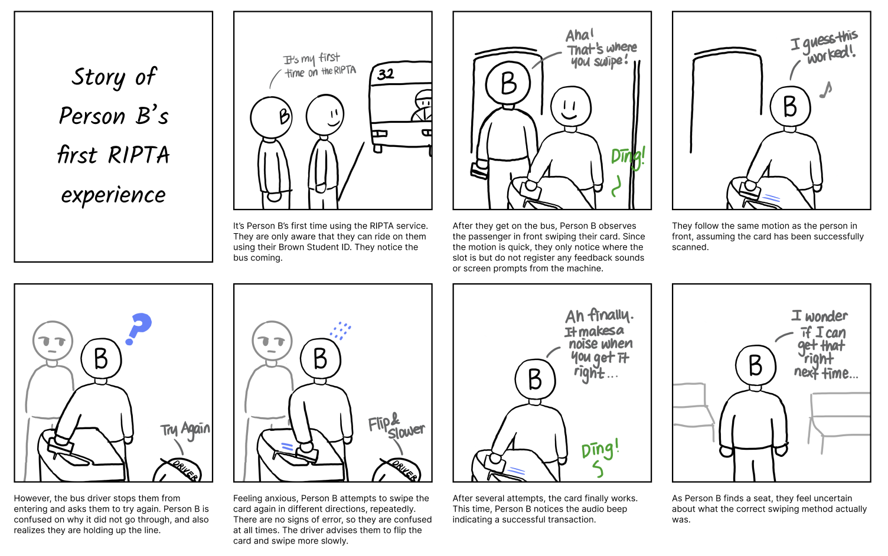

Studying usability barriers and improvement opportunities for the Brown student RIPTA swipe system.
Timeline
2 weeks, March 2025
Sometimes, it’s the smallest interactions that reveal the biggest gaps in usability. The RIPTA card swipe system is one of those everyday interfaces—simple on the surface, but layered with friction. In this project, I observed how Brown University students interact with the RIPTA bus card swipe reader, uncovering subtle but meaningful pain points around feedback, accessibility, and trust. My goal was to understand not just what didn’t work, but how it made people feel.
This was a field research project—I went straight to the source: the bus stop. I conducted live observations and short interviews with fellow Brown students during active transit hours. The goal was to trace how people moved through the interface and where friction occurred, both physically and mentally.
The RIPTA swipe system allows students to board using their Brown ID cards. While functional, its interface is outdated and inconsistent. Here’s how it works:
At first glance, it works. But after observing real users—some in a rush, some unfamiliar with the system—it became clear that what’s *missing* (like directionality cues or error specificity) is just as impactful as what’s there.
I crafted my interviews to center around experience—not just function. I asked:
| User | Interview Responses |
|---|---|
| Julia | "It’s frustrating when the card doesn’t swipe right the first time. I’d prefer a tap system like in stores." |
| Avery | "I’ve swiped and heard an error sound with no explanation. I never know if it's the card or the machine." |
| Jake | "The swipe direction graphic is worn out. I often rely on the driver or screen to confirm it worked." |
I built two personas to capture the range of experiences I observed—both the frustrated regular and the overwhelmed newcomer.
Rides RIPTA weekly but dreads the card reader. It’s unreliable and slows her down.
New to RIPTA, this student feels anxious and uncertain using the system for the first time.
I translated these findings into a visual storyboard, mapping the typical pain points of a first-time user—especially the moment of confusion when feedback is absent or ambiguous.
This project reminded me that no interface is “too small” to matter. A simple card swipe is a *moment of trust*—a point where a user expects clarity, confidence, and ease. And when that moment fails, it has ripple effects: anxiety, delay, even embarrassment.
Through this study, I learned to see public interfaces not just as technical systems, but as social spaces. By listening to real voices and watching real behaviors, I uncovered gaps that data alone wouldn’t show. Personas and storyboarding helped me stay grounded in empathy—and reminded me that good design serves *everyone*, not just the average user.